6.1 Leçon
6.1.1 Télécharger les données
Importez l’ensemble des données utilisées dans ce module.
Sauvegardez le dossier compressé (Module6_donnees.zip) dans votre répertoire de travail pour ce module, et dézippez-le.
Ce dossier comprend lui-même cinq sous-dossiers que vous devez également dézipper:
COVIDElevationPopulationRoutesVilles
Nous utiliserons ces données à partir de la section 6.1.3. Commençons d’abord par une introduction sur les principes de bases de la cartographie.
6.1.2 Éléments de base en cartographie
Principes fondamentaux
La mise en page d’une carte est importante pour que cette dernière puisse être utilisée efficacement. Nous avons tous déjà vu des cartes de mauvaise qualité. Celles-ci peuvent être difficiles à lire et à interpréter. Elles peuvent être peu informatives, trompeuses et même erronées car certaines informations essentielles sont absentes ou sont diffusées incorrectement. La figure 6.1 donne quelques exemples de cartes que l’on peut facilement qualifier de mauvaises.

 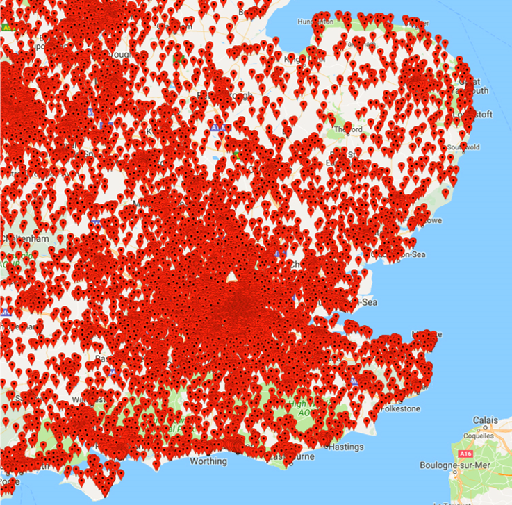
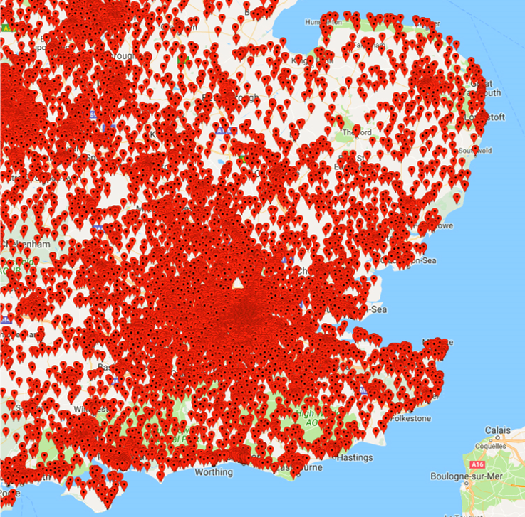
FIGURE 6.1: Exemples de mauvaises cartes. a) Carte de la diplomation et du revenu selon les comtés aux États-Unis (source: https://blog.stratasan.com/bad-maps-bad-maps). b) Carte du monde (source:https://carto.com). c) Carte de la localisation de tous les pubs dans le sud est du Royaume-Uni (source:http://www.math.uwaterloo.ca/tsp/pubs/data.html). d) Carte de l’Europe (source:https://gis.stackexchange.com).
La première carte, par exemple, illustre le niveau de diplomation et de revenu aux États-Unis. Elle utilise une superposition de trois couleurs pour chaque comté du territoire américain. Le rose représente le taux de diplomation à l’école secondaire, le jaune, le taux de diplomation au collègue, et le bleu, le revenu médian. Une multitude de couleurs apparait donc sur la carte la rendant difficile à interpréter. Dans un cas pareil, la carte devient inutile car elle ne permet pas de transmettre un message unique et clair. Une carte est efficace lorsqu’elle est simple. Il faut donc éviter d’y mettre trop d’informations.
La deuxième carte illustre l’ensemble des pays de la planète et présente plusieurs problèmes. D’abord le nom de chaque pays, abrégé par trois lettres, est positionné sur chacun de ceux-ci. Cette approche rend totalement illisible le nom des pays dans les régions où ils sont nombreux. De plus, l’usage d’abbréviation est peu utile à moins de connaître déjà le nom du pays. Finalement, le choix des couleurs employées pour le texte et pour la carte elle-même est épouvantable. Les lettres sont beaucoup trop pâles, nuisant à la lisibilité des noms, et la palette de couleurs pour représenter les pays et les océans (en jaune!) est dérangeante.
La troisième carte donne la position de tous les pubs dans le sud est du Royaume-Uni. Une telle carte est utile si l’utilisateur a la possibilité d’agrandir l’écran en mode zoom. Autrement, la quantité trop grande de marqueurs masque l’information sur la localisation des pubs. Si l’objectif de cette carte est d’illustrer l’abondance des pubs dans ce pays, alors une représentation de la densité de pubs par habitant pour une division administrative donnée serait plus informative.
Finalement, la dernière carte représente une section de l’Europe. Nous observons un usage exagéré d’écriture sur la carte qui, en plus, repose sur une trop grande diversité de polices et de tailles de caractère. Cette écriture est dense et n’est pas structurée de manière hiérarchique si bien qu’il est impossible de dégager les éléments importants. Également, la signification du gradient de couleurs utilisé n’est pas évidente.
Il existe quelques principes fondamentaux à respecter lorsque nous concevons une carte. Nous les résumons ici. Une carte doit être:
Claire et cohérente. Nous devons pouvoir comprendre et interpréter la carte facilement.
Adaptée à son public cible. Une carte qui s’adresse au grand public sera différente d’une carte qui s’adresse à des experts.
Conforme aux conventions. Une carte doit respectée les conventions propres à son domaine d’application. Cela signifie aussi de respecter les associations naturelles de couleur tel que d’illustrer les plans d’eau par la couleur bleue.
Esthétique. Une carte doit, par sa composition, le choix des couleurs, sa typographie, être agréable à l’oeil.
Bien structurée. Une carte doit être dotée d’une certaine hierarchie visuelle. La visualisation d’une carte doit permettre de dégager rapidement ses éléments importants.
Informations indispensables et optionnelles
Plusieurs éléments de mise en page sont indispensables dans une carte (Figure 6.2):
- Un titre
- Une échelle graphique
- Une légende
- L’orientation
- La source
- L’auteur ou l’autrice
- La référence spatiale
FIGURE 6.2: Éléments indispensables d’une carte (source: https://crelaurentides.org/).
Le titre est essentiel car il est la synthèse du message cartographie. Il doit être complet mais concis. Il peut être neutre (p. ex: Nouveaux cas de COVID-19) ou subjectif (p. ex: Hausse fulgurante des cas de COVID-19).
L’échelle graphique est essentielle pour que le lecteur puisse saisir l’étendue et la résolution du phénomène illustré dans la carte. L’échelle doit être simple (sans trop de subdivisions), pas trop longue, donner des valeurs arrondies, et toujours fournir l’unité métrique utilisée ou son abbréviation (p. ex. kilomètres ou km).
La légende est essentielle à l’interprétation d’une carte. Celle-ci traduit les éléments graphiques en texte. En effet, tous les éléments qui ne sont pas évidents ou conformes doivent apparaître dans la légende de façon alignée et claire. Une légende doit comprendre: les éléments graphiques, le texte associé à chaque élément et les unités de mesure. Les éléments graphiques se rapportant à des données vectorielles doivent idéalement suivre l’ordre point-ligne-polygone dans la légende. Notez qu’il est aussi inutile d’écrire le mot Légende.
L’orientation de la carte, spécifiée par une flèche du nord ou une rose des vents, est indispensable si les données illustrées sont en rotation de sorte que le nord ne corresponde pas au haut de la carte. Par exemple, la flèche du nord est indiquée sur la carte du réseau d’autobus de nuit de la Société de transport de Montréal (figure 6.3). En effet, pour facilité la lecture de la carte, l’île de Montréal est représentée sur un axe horizontal qui ne correspond pas à l’axe géographique est-ouest. La flèche du nord doit être discrète sur une carte. Par ailleurs, si le nord est bien au haut de la carte, la flèche du nord est optionnelle.
FIGURE 6.3: La flèche du nord est indispensable lorsque ce dernier ne correspond pas au haut de la carte (source: http://www.mondecarte.com/carte/canada/montreal/montreal_night_bus_plan.png.
{kind=link}
La source, l’auteur.trice, la date, et la projection doivent toujours être présents sur une carte. La citation de la source des données est importante pour des raisons éthiques. Les données illustrées ont été assemblées par une personne ou un organisme et nous devons reconnaître le travail de ce dernier. De plus, la citation d’une source, si celle-ci est reconnue, apporte de la crédibilité au contenu de la carte. Finalement, la citation d’une source permet au lecteur ou à la lectrice d’une carte de retracer et d’accéder aux données. Notez que ces quatre éléments devraient apparaître en petits caractères sur la carte car ils ne sont pas centrals au message.
D’autres éléments sont souvent présents sur une carte mais sont optionnels:
- Un cadre
- Un encart
- Des graticules
- Un quadrillage
Un cadre sert à délimiter la zone cartographiée (figure 6.4).
Un encart est une carte secondaire de petite taille que l’on appose à la carte principale (figure 6.4). Cette carte secondaire peut servir, par exemple, à représenter une étendue géographique plus grande qui permet de mieux situer la zone représentée dans la carte principale. Un encart peut être situé à l’intérieur ou à l’extérieur du cadre.

FIGURE 6.4: Un cadre et un encart sont des éléments optionnels de la mise en page d’une carte (source: Proulx et al. 2019).
Les graticules correspondent au réseau de latitudes et de longitudes permettant d’afficher les coordonnées géographiques des données représentées. Les coordonnées, en degrés, sont affichées sur le cadre de la carte (figure 6.5).
FIGURE 6.5: Les graticules sont les coordonnées géographiques (degrés de latitude et de longitude) sur le cadre d’une carte (indice de sévérité des feux de forêt, source:https://cwfis.cfs.nrcan.gc.ca/) .
Un quadrillage, ou une grille, est un réseau de lignes horizontales et verticales perpendiculaires permettant d’afficher le système de coordonnées projetées (figure 6.6).

FIGURE 6.6: Le quadrillage correspond au système de coordonnées projetées. Il est identifé par le nom de la projection cartographique utilisée (source:https://www.sepaq.com/) .

FIGURE 6.7: Les graticules et le quadrillage peuvent être utilisées sur une même carte (source:https://sbl.umontreal.ca/) .
Le texte
Différents types de texte apparaissent sur une carte. Il y a le texte utilisé sur ou autour d’une carte comme le titre, le texte de la légende et le texte affichant la source des données, la date, la projection, etc. Une carte peut aussi afficher des étiquettes qui servent à décrire les attributs des données spatiales représentées. Par exemple, le nom d’un pays sur le polygone délimitant les frontières de ce dernier. Une carte peut aussi contenir des annotations, c’est-à-dire du texte apposées sur la carte pour préciser des informations ou identifier des éléments qui ne sont pas nécessairement des attributs des données spatiales représentées.
Le choix de la police, de la fonte, de la taille et de la couleur des caractères utilisés dans le texte d’une carte a une influence sur sa lisibilité. Il existe quelques principes à respecter lors du choix de ces éléments.
Nous devons nous limiter à deux polices de caractères : une police avec empattement (serif en anglais) et une autre sans empattement (sans serif) (figure 6.8). Les polices avec empattement sont généralement utilisées pour étiqueter des objets naturels (plans d’eau, montagnes, etc.) alors que les polices sans serif sont utilisées pour étiqueter des objets anthropiques (villes, routes, ponts, etc.).
FIGURE 6.8: Lettre avec empattement à gauche et sans empattement à droite.
La taille de caractère doit être supérieure à 7 points. Il est préférable de conserver une seule taille de caractères à moins de vouloir créer une hiérarchie visuelle dans les étiquettes.
Nous devons favoriser également l’utilisation d’une seule couleur de texte, à moins de vouloir identifier différentes catégories d’étiquettes.
L’usage de différentes couleurs et tailles de caractères dans l’objectif de créer une hiérarchie visuelle peut améliorer la lisibilité d’une carte mais doit se faire judicieusement et avec parcimonie. Les figures (6.9) et (6.10) donnent des exemples dans lesquels le texte a été adapté pour améliorer la présentation d’une carte.
FIGURE 6.9: Exemple de carte où l’écriture a été améliorée. Le choix de couleurs différentes pour représenter les frontières et les plans d’eau, ainsi que l’orientation du texte améliore la lisibilité de la carte (source: Guimond 2021 (https://mgimond.github.io/Spatial/good-map-making-tips.html#typefaces-and-fonts)) .
FIGURE 6.10: Exemple de carte où l’écriture a été améliorée. La carte du dessus fait l’usage de caractères de tailles, de fonte, de couleurs et d’orientation différentes créant une hiérarchie visuelle efficace (source: https://www.axismaps.com/) .
Dans la figure (6.10), remarquez le lettrage en majuscule pour étiqueter des territoires ainsi que la fonte italique et la couleur bleue pour identifier des plans d’eau. De plus, remarquez que les étiquettes associées aux points ne sont jamais directement dessus, dessous ou à côté des points. Elles sont plutôt en haut à droite, en haut à gauche, en bas à droite ou en bas à gauche.
Les types de carte
Il existe deux grandes catégories de carte: les cartes générales et les cartes thématiques. Les cartes générales affichent uniquement l’emplacement géographiques des données qu’elles soient sous forme de points, de lignes, de polygones ou de rasters. Les cartes routières, les plans de localisation, les cartes topographiques et les cartes touristiques en sont des exemples (6.11).
FIGURE 6.11: Exemples de carte générale. A) Carte routière des environs de Paris (source:https://fr.viamichelin.be/). B) Carte touristique de la Gaspésie (source: http://motoplus.ca). C) Plan du Montréal souterrain (source: https://voyage-montreal.com/montreal-souterrain ).
Les cartes thématiques, quant à elles, affichent non seulement l’emplacement géographiques des données spatiales mais aussi un ou plusieurs de leurs attributs. Ces cartes utilisent une symbologie pour représenter les attributs des données. C’est-à-dire qu’elles font appel à différentes couleurs, formes et tailles de symboles pour représenter les données de sorte que celles-ci aquièrent une signification. Ces cartes servent ainsi à transmettre un message. Nous approfondirons les concepts de symbologie à la prochaine section. Pour le moment, notons que plusieurs types de cartes thématiques existent. Voici quelques exemples:
Les cartes à symboles gradués et à symboles proportionnels utilisent des symboles de tailles différentes pour afficher une différence quantitative ou relative entre les valeurs de l’attribut représenté. Dans le premier cas, les valeurs sont divisées en classes couvrant chacune une certaine plage de valeurs. Chaque classe est alors illustrée par une taille spécifique de symbole (6.12A). Dans le second cas, il n’y a pas de classification des valeurs. La plus petite valeur est illustrée par le plus petite taille de symbole, et la taille de chaque symbole augmente proportionnellement avec la valeur absolue de la donnée qu’elle représente (6.12B).
Les cartes de densité de points utilisent des symboles ponctuels de même taille mais dont le nombre varie d’une polygone à un autre pour illustrer la variation dans la densité de l’attribut représenté (6.12C).
FIGURE 6.12: Exemples de (A) carte avec symboles gradués, (B) carte avec symboles proportionnels, (C) carte de densité de points (source: GISGeography 2021. Dot Distribution vs Graduated Symbols vs Proportional Symbol Maps: https://gisgeography.com/dot-distribution-graduated-symbols-proportional-symbol-maps/, Consulté le 30 mars 2021).
Les cartes choroplèthes illustrent les régions d’une carte en utilisant une palette de couleur qui réflètent la variation relative d’un attribut d’une région à l’autre (par exemple la densité de population)(6.13). Notons que choro signifie aire ou région en grec, et plèthe signifie grande quantité ou multitude. L’apparence d’une carte choroplèthe dépend de la façon dont la classification des valeurs d’attribut est réalisée; c’est-à-dire la plage de valeurs attribuée à chaque couleur. Nous reviendrons sur l’importance de la classification dans la prochaine section.
FIGURE 6.13: Densité de population à l’échelle mondiale. (Source:https://ourworldindata.org/most-densely-populated-countries).
Les cartes isoplèthes représentent les données spatiales par des lignes contour. C’est-à-dire des lignes formées en joignant ensemble les points qui ont la même valeur d’attribut (iso signifie égal en grec). Les cartes isoplèthes peuvent aussi utiliser une même couleur pour représenter des régions qui ont une même valeur d’attribut (6.14).
FIGURE 6.14: Période d’ensoleillement en Europe, en heures par année. (Source:http://averagemaps.blogspot.com/2013/10/isoline-map.html).
Les cartogrammes illustrent les régions d’une carte en modifiant leur taille de façon proportionnelle à l’attribut représenté (6.15).
FIGURE 6.15: Exemples de (A) carte du monde avec une représentation non modifiée des superficies des états, (B) carte de la population mondiale (la superficie de chaque territoire est proportionnelle à la fraction de la population mondiale y habitant), (C) Carte de la consommation de café en 2014 (la superficie de chaque territoire est proportionnelle à la proportion mondiale de café qui y est consommé (kg par habitants)) (source:https://worldmapper.org/).
La symbologie
La carte est un outil de communication. La façon dont sont représentées les données spatiales sur une carte joue un rôle primordial dans l’efficacité et la justesse de cet outil.
On appelle sémiologie graphique38 ou symbologie «l’encodage des entités cartographiques dans le but de transmettre une signification.» 39 La symbologie se rapporte donc aux choix faits pour représenter les données spatiales et pour représenter les relations entre ces données.
Les variables visuelles sont des différences dans les entités cartographiques pouvant être perçues par l’oeil humain. Le cartographe Jacques Bertin (1967) proposa l’existence de sept variables visuelles principales: la position, la forme, la taille, la couleur (la teinte), la valeur (la luminosité), la texture et l’orientation (6.16). Depuis, d’autres variables se sont ajoutées: la saturation, la disposition, la netteté, la résolution, et la transparence.
FIGURE 6.16: Les variables visuelles (source: figure adaptée de https://cartosquad.com/)
Une relation entre les données exprime généralement une différence qualitative ou une différence quantitative. Par exemple, distinguer sur une carte la capitale des autres villes d’un pays relève d’une différence qualitative nominale. Nous pouvons alors choisir différents symboles (un point pour une ville et une étoile pour une capitale) ou différentes couleurs (un point bleu pour une ville et un point rouge pour une capitale) pour distinguer ces entités. Les attributs qualitatifs peuvent aussi exprimer une différence ordinale, c’est-à-dire une hiérarchie entre les données. Par exemple, les rues, les boulevards, les autoroutes peuvent être représentés par des traits d’aspects ou d’épaisseurs différents.
Par ailleurs, nous pourrions vouloir exprimer une différence quantitative entre la taille des populations des villes. Cette quantité absolue pourrait alors être exprimée par l’utilisation de point dont le diamètre est proportionnel à la taille de la ville qu’il représente. D’autre part, pour représenter une quantité relative, par exemple la densité de population de différents états, il vaudra mieux utiliser un gradient de luminosité allant d’une couleur pâle à foncée pour remplir les polygones associés aux états.
Le tableau de la figure 6.17 résume les choix possibles de symbologie en fonction de la nature des données. Ce tableau est tiré du livre Savoir faire une carte : Aide à la conception et à la réalisation d’une carte thématique univariée de Zanin et Trémolo (2003).
Les variables visuelles n’ont pas toutes la même efficacité à distinguer les données. Certaines variables doivent être favorisées alors que d’autres sont à proscrire pour représenter certaines données et leurs relations. Par exemple, la forme est une variable visuelle utile pour distinguer des données nominales. Toutefois, la forme ne devrait pas être utilisée pour représenter des valeurs ordinales ou des valeurs quantitatives.
Les couleurs
Cette sous-section s’attarde aux variables visuelles liées aux couleurs. Elle reprend, en partie, le [chapitre 4] (https://mgimond.github.io/Spatial/symbolizing-features.html) du livre de Gimond (2021). Le choix des couleurs est évidemment important dans une carte puisque celles-ci permettent de distinguer, de catégoriser ou de mettre l’emphase sur certains phénomènes spatiaux.
Le choix des couleurs ajoute une certaine subjectivité à une carte. Par exemple, la couleur rouge peu facilement être associée à un extrême ou à un danger. La carte de l’indice de sévérité des feux de forêt à la figure 6.5 utilise le rouge pour désigner la zone où cet indice est maximal. Le contraire, par exemple utiliser la couleur bleu pour cette zone, aurait porté à confusion et nuit au message véhiculé par la carte.
Les dimensions perceptuelles
Une couleur est définie par une combinaison de trois valeurs qu’on appelle dimensions perceptuelles: la teinte, la luminosité et la saturation.
La teinte (ou la tonalité, hue en anglais) est la dimension que nous associons aux noms des couleurs. La teinte est généralement utilisée pour représenter différentes catégories de données; c’est-à-dire des données qualitatives nominales.FIGURE 6.18: Un exemple de 8 différentes teintes de couleur
FIGURE 6.19: Huit différentes teintes (colonnes) déclinées selon des valeurs décroissantes de luminosité (rangées).
FIGURE 6.20: Huit différentes teintes (colonnes) déclinées selon des valeurs décroissantes de saturation (rangées).
Définir les couleurs dans R
Dans R, il existe plusieurs façons de définir les couleurs.
Nom des couleurs
Nous pouvons d’abord définir une couleur par son nom. Il existe 657 différents noms de couleur dans R que nous pouvons découvrir en utilisant la fonction colours(). Voyons quelles sont les 50 premières couleurs:
colours()[1:50] [1] "white" "aliceblue" "antiquewhite"
[4] "antiquewhite1" "antiquewhite2" "antiquewhite3"
[7] "antiquewhite4" "aquamarine" "aquamarine1"
[10] "aquamarine2" "aquamarine3" "aquamarine4"
[13] "azure" "azure1" "azure2"
[16] "azure3" "azure4" "beige"
[19] "bisque" "bisque1" "bisque2"
[22] "bisque3" "bisque4" "black"
[25] "blanchedalmond" "blue" "blue1"
[28] "blue2" "blue3" "blue4"
[31] "blueviolet" "brown" "brown1"
[34] "brown2" "brown3" "brown4"
[37] "burlywood" "burlywood1" "burlywood2"
[40] "burlywood3" "burlywood4" "cadetblue"
[43] "cadetblue1" "cadetblue2" "cadetblue3"
[46] "cadetblue4" "chartreuse" "chartreuse1"
[49] "chartreuse2" "chartreuse3" Vous remarquerez que les couleurs sont nommées par ordre alphabétique sauf pour la première entrée qui est la couleur blanche (white).
Pour connaître la couleur associée à chaque nom, vous pouvez consulter la charte suivante: charte des couleurs [PDF].
Vous pouvez utiliser une couleur en la nommant (par ex. "red") ou en référant au numéro de sa position dans le vecteur colours() (par ex. colours()[552]) si vous connaissez celui-ci.
La fonction grep() permet de trouver des couleurs associées à une couleur d’intérêt. Prenons, par exemple, la couleur verte:
# Indices des couleurs
grep("green", colours()) [1] 81 85 86 87 88 89 102 103 104 105 106 139
[13] 254 255 256 257 258 259 393 417 429 448 472 474
[25] 514 515 516 517 518 574 575 576 577 578 610 611
[37] 612 613 614 657Ces indices sont associées aux couleurs suivantes:
FIGURE 6.21: Quarante couleurs vertes identifiées par la fonction grep()
Nous pouvons déterminer le nom des couleurs de la façon suivante:
# Noms des couleurs
colours()[grep("green", colours())] [1] "darkgreen" "darkolivegreen"
[3] "darkolivegreen1" "darkolivegreen2"
[5] "darkolivegreen3" "darkolivegreen4"
[7] "darkseagreen" "darkseagreen1"
[9] "darkseagreen2" "darkseagreen3"
[11] "darkseagreen4" "forestgreen"
[13] "green" "green1"
[15] "green2" "green3"
[17] "green4" "greenyellow"
[19] "lawngreen" "lightgreen"
[21] "lightseagreen" "limegreen"
[23] "mediumseagreen" "mediumspringgreen"
[25] "palegreen" "palegreen1"
[27] "palegreen2" "palegreen3"
[29] "palegreen4" "seagreen"
[31] "seagreen1" "seagreen2"
[33] "seagreen3" "seagreen4"
[35] "springgreen" "springgreen1"
[37] "springgreen2" "springgreen3"
[39] "springgreen4" "yellowgreen" Composantes RVB
Nous pouvons aussi définir une couleur par un vecteur donnant chacune des trois composantes RVB (RGB en anglais) qui la constitue. Rappellons que chacune des composantes RVB (Rouge, Vert, Bleu) prend une valeur discrète entre 0 et 255. La valeur 0 correspond à l’intensité la plus faible tandis que la valeur 255 correspond à l’intensité la plus élevée. Chaque composante peut aussi être exprimée selon la notation décimale par un nombre entre 0.0 et 1.0.
Puisque chaque composante RVB peut prendre 256 valeurs différentes, le format RVB permet de définir 256 x 256 x 256 couleurs différentes (16777216!).
La fonction col2rgb() permet de traduire une couleur, identifiée par son nom, vers son format RVB.
# Composantes RVB de la couleur verte
col2rgb("green") [,1]
red 0
green 255
blue 0# Composantes RVB de la couleur vert forêt
col2rgb("forestgreen") [,1]
red 34
green 139
blue 34Codes HEX
Nous pouvons également définir une couleur par son code hexadécimal (HEX). Le code hexadécimal utilise un système en base 16 pour encoder la notation RVB d’une couleur en une notation condensée de six chiffres ou lettres. Le code HEX prend la forme #RRVVBB où chaque lettre peut prendre un des 16 symboles suivants: 0,1,2,3,4,5,6,7,8,9,A,B,C,D,E,F. Par exemple, “00” correspond à la valeur 0, et “FF” correspond à la valeur 255. Ainsi, le code de HEX de la couleur verte est #00FF00.
La fonction rgb(red, green, blue) renvoie le code HEX d’une couleur identifiée par son format RVB
# Notation HEX de la couleur verte
rgb(0,255,0, maxColorValue=255)[1] "#00FF00"# Ou en utilisant la forme notation normalisée de RVB
rgb(0.0,1.0,0.0)[1] "#00FF00"La fonction rgb() permet aussi de définir des couleurs en leur assignant un nom. Par exemple:
rgb(0,(250:255)/255,0, names = paste("vert", 0:5, sep="_")) vert_0 vert_1 vert_2 vert_3 vert_4
"#00FA00" "#00FB00" "#00FC00" "#00FD00" "#00FE00"
vert_5
"#00FF00" Composantes TSL/TSV
Selon une approche basée sur la perception des couleurs, nous pouvons définir une couleur par sa combinaison de trois paramètres: sa teinte (hue en anglais), sa saturation (aussi appelée chromaticité) et sa luminosité (lightness en anglais) ou sa valeur (value en anglais). Ces systèmes de description des couleurs se nomment TSL (HSL en anglais) et TSV (HSV en anglais). Ils différent légèrement mais ils s’appuient sur les mêmes principes40.
La fonction rgb2hsv(red, green, blue) permet de traduire une couleur représentée par le modèle RVG vers le modèle TSV.
# La couleur verte
rgb2hsv(0,255,0,maxColorValue=255) [,1]
h 0.3333
s 1.0000
v 1.0000Inversément, la fonction hsv(hue, saturation, value) permet d’obtenir le code HEX d’une couleur représentée selon le modèle TSV. Chaque entrée de la fonction prend une valeur entre 0.0 et 1.0.
# La couleur verte
hsv(0.333333,1.0,1.0)[1] "#00FF00"
La fonction hcl(hue, chroma, luminance) renvoie le code HEX d’une couleur représentée selon le modèle TSL. Le paramètre pour la teinte, hue, prend une valeur entre 0 et 360. La valeur maximale du paramètre pour la chromacité, chroma, dépend des valeurs attribuées à la teinte et à la luminosité. Le paramètre pour la luminosité, luminance, prend une valeur entre 0 et 100. Seul un certain domaine de valeurs de luminosité est possible pour une combinaison de teinte et de chromacité donnée.
hcl(h = 120, c = 1, l = 0.5)[1] "#000300"Les palettes de couleurs
Une palette de couleurs est un ensemble fini de couleurs pré-sélectionnées. Dans une carte thématique, une palette de couleur établit une correspondance entre une valeur d’attribut et une couleur de la palette.
Il existe trois catégories de palettes de couleurs.
- Les palettes qualitatives
- Les palettes séquentielles
- Les palettes divergentes
Les palettes qualitatives sont utilisées pour représenter des données qualitatives nominales, c’est-à-dire des données qui ne sont pas ordonnées ni quantitatives. Une palette qualitative est constituée de couleurs de teintes différentes mais de luminosité et de saturation égales.
FIGURE 6.22: Un exemple de 4 palettes qualitatives
Une palette qualitative sied bien pour illustrer les différents continents de la planète.
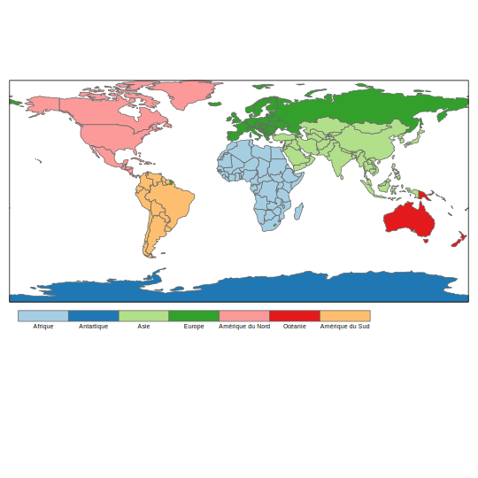
Les palettes séquentielles sont utilisées pour représenter des données ordonnées, par exemple la température, la densité de population, le revenu moyen par habitant, etc. Une palette séquentielle forme un gradient allant d’une couleur pâle (correspondant à la valeur la plus faible de l’attribut représenté) à une couleur foncée (correspondant à la valeur la plus forte de l’attribut). La palette séquentielle utilise généralement une seule teinte (mais parfois plus) qui est déclinée sur plusieurs niveaux de luminosité ou de saturation.
FIGURE 6.23: Un exemple de 5 palettes séquentielles. Les trois premières palettes font appel à une seule teinte (noire, bleue et verte). La quatrième fait appel à deux teintes (jaune et verte) tandis que la dernière fait appel à trois teintes (jaune, orange et rouge)
À titre d’exemple, une palette séquentielle sied bien pour illustrer comment la densité de population varie d’un pays à l’autre.
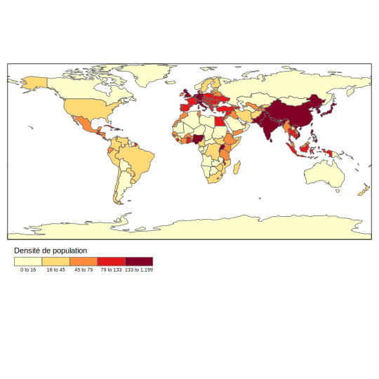 Les palettes divergentes sont également utilisées pour représenter des données ordonnées. Toutefois, une palette divergente met l’accent sur une valeur centrale à partir de laquelle les données divergent. Généralement, une palette divergente est constituée de deux teintes complémentaires qui dénotent les valeurs extrêmes de part et d’autre de la valeur centrale. La saturation et la luminosité de chaque teinte sont alors ajustées pour que les couleurs se répartissent de façon symmétrique autour de la valeur centrale qui est représentée par une couleur pâle.FIGURE 6.24: Un exemple de 4 palettes divergentes.
Par exemple, une palette divergente illustre bien la distribution spatiale des produits régionaux bruts. 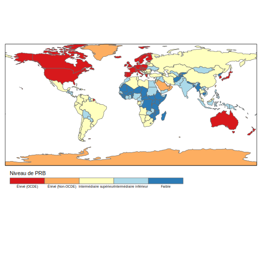
Les palettes de couleurs dans R
Il existe plusieurs façons de définir des palettes de couleurs dans R.
Les palettes de couleurs de base de R
Tout d’abord, R comprend des palettes par défaut qui sont définies par les fonctions suivantes:
rainbow(n)heat.colors(n)terrain.colors(n)topo.colors(n)cm.colors(n)
Le paramètre n spécifie le nombre de couleurs.
FIGURE 6.25: Les palettes de base dans R.
Les palettes viridis
La bibliothèque viridis comprend quatre palettes de couleurs séquentielles qui sont définies par les fonctions suivantes:
viridis(n)magma(n)plasma(n)inferno(n)
FIGURE 6.26: Les palettes de la bibliothèque viridis.
Les palettes ColorBrewer
La bibliothèque RColorBrewer contient les palettes de couleurs ColorBrewer particulièrement utiles pour la cartographie. Cette bibliothèque comprend un grand nombre de palettes séquentielles, divergentes et qualitatives.
FIGURE 6.27: Les palettes de la bibliothèque RColorBrewer.
Remarquez que les palettes de RColorBrewer contiennent un nombre maximal de 12 couleurs (ou moins pour les palettes qualitatives), contrairement aux palettes de base et viridis.
Pour choisir une palette particulière, nous utilisons la fonction brewer.pal(n,name) où n est le nombre de couleurs dans la palette, et name est le nom de la palette. Par exemple,
brewer.pal(5, "Accent")[1] "#7FC97F" "#BEAED4" "#FDC086" "#FFFF99" "#386CB0"
Ceci retourne un vecteur de cinq couleurs de la palette Accent.
6.1.3 Cartes statiques avec tmap
Il existe plusieurs bibliothèques R permettant de visualiser des données spatiales. La bibliothèque mapview, que nous avons déjà utilisée, en est un exemple. La bibliothèque ggplot2, que vous connaissez peut-être, permet de créer des cartes qui peuvent être peaufinées par l’utilisation de fonctions des bibliothèques sf et ggspatial41. Dans le cadre de ce cours, nous nous concentrerons sur la bibliothèque tmap et l’apprentissage de ses fonctions principales.
Nous avons choisi tmap parce que cette bibliothèque est relativement simple à utiliser et que ses fonctions sont intuitives. Le fonctionnement de tmap est très similaire à celui de la bibliothèque ggplot2 qui est fort populaire pour la visualisation de données de toutes sortes. Si vous connaissez déjà ggplot2, alors l’apprentissage de tmap vous sera familié. Si vous ne connaissez pas ggplot2, vous pourriez être amenés à l’utiliser dans le futur, et dans ce cas votre connaissance de tmap vous sera utile.
De façon générale, nous utilisons tmap pour cartographier des données spatiales de la façon suivante:
tm_shape(DonneesSpatiales) + tm_fonction1() + tm_fonction2() + ...La fonction tm_shape() est suivi d’une ou de plusieurs fonctions qui précisent les objets ou les attributs des données à cartographier ainsi que les éléments cartographiques à ajouter et la mise en page souhaitée.
Télécharger la bibliothèque tmap:
install.packages("tmap")Chargez tmap dans votre session de travail R ainsi que les bibliothèques sf et raster dont nous aurons besoin pour lire et manipuler les données vectorielles et matricielles respectivement:
library(tmap)
library(sf)
library(raster)6.1.4 Les polygones
Données sur les régions administratives du Québec
Pour débuter notre exploration des fonctions de cartographie offertes avec tmap nous utiliserons les données vectorielles sur les limites des régions administratives du Québec ainsi que la taille de leur population. La taille des populations des régions administratives provient de la Banque de données des statistiques officielles sur le Québec (https://bdso.gouv.qc.ca/), et les limites géographiques des régions proviennent du site Données Québec (https://www.donneesquebec.ca/recherche/dataset/decoupages-administratifs).
Utiliser la fonction st_read() de la bibliothèque sf pour lire le shapefile QC_RegAdm_Pop.shp contenu dans le dossier Population:
Q <- st_read("Module6/Module6_donnees/Population/QC_RegAdm_Pop.shp")Reading layer `QC_RegAdm_Pop' from data source
`E:\ELF\Dropbox\Teluq\Enseignement\Cours\SCI1031\Developpement\Structure_test\sci1031\Module6\Module6_donnees\Population\QC_RegAdm_Pop.shp'
using driver `ESRI Shapefile'
Simple feature collection with 17 features and 8 fields
Geometry type: MULTIPOLYGON
Dimension: XY
Bounding box: xmin: -830300 ymin: 118000 xmax: 783300 ymax: 2091000
Projected CRS: NAD83 / Quebec LambertObserver la structure et les attributs du shapefile Q. Celui-ci contient 17 multipolygones, un pour chacune des régions administratives du territoire québécois. De plus, Q contient 8 attributs:
NUM_REG: le numéro associé à la région administrative,NOM_REG: le nom de la région administrative,AREA_REG: la superficie de la région,Pop_tot: la population totale en 2019 dans la région,Pop_0_14: la population agée de 0 à 14 ans,Pop_15_24: la population agée de 15 à 24 ans,Pop_25_64: la population agée de 25 à 64 ans,Pop_65_: la population agée de 65 ans et plus.
Intérieur des polygones
Fonction tm_fill
Créons tout d’abord une carte simple du shapefile Q que nous venons de charger. La fonction tm_fill() permet de remplir de façon homogène l’intérieur des limites d’un polygone. Elle s’applique donc aux données vectorielles de type polygone, et on l’ajoute à la donction tm_shape().
tm_shape(Q)+
tm_fill()
Objet tmap
La bibliothèque tmap comprend sa propre classe d’objets:
map_Q <- tm_shape(Q)+
tm_fill()
class(map_Q)[1] "tmap"
En créant un objet tmap, la carte est seulement affichée lorsqu’on appelle l’objet.
La création d’objet tmap est utile car, comme nous le verrons, elle permet de constituer une carte de base à laquelle nous pouvons ajouter des éléments cartographiques.
Frontières des polygones
Fonction tm_borders()
La fonction tm_borders() permet d’illustrer les frontières des polygones:
# frontiere des regions admin
tm_shape(Q) +
tm_borders()
La fonction tm_borders() peut s’utiliser conjointement avec la fonction tm_fill():
# Quebec + frontiere
tm_shape(Q) +
tm_fill() +
tm_borders()
Fonction tm_polygons()
Par ailleurs, la fonction tm_polygons() est équivalente l’utilisation conjointe de tm_borders() et tm_fill():
# tm_polygons = tm_fill + tm_borders
tm_shape(Q) +
tm_polygons()
Paramètres esthétiques
Les fonctions tm_borders() et tm_fill() possèdent plusieurs arguments pour ajuster l’apparence de la carte. Voici des exemples:
# couleur des polygones
Q1 <- tm_shape(Q) + tm_fill(col="green")
# transparence
Q2 <- tm_shape(Q) + tm_fill(col="green", alpha = 0.4)
# couleur des frontières
Q3 <- tm_shape(Q) + tm_borders(col="green")
# épaisseur du trait
Q4 <- tm_shape(Q) + tm_borders(col="pink", lwd = 4)
# type de trait
Q5 <- tm_shape(Q) + tm_borders(col="blue", lty = 2)
# couleur des polygones et des frontières
Q6 <- tm_shape(Q) + tm_fill(col="blue", alpha = 0.3) +
tm_borders(col="black")
tmap_arrange(Q1,Q2,Q3,Q4,Q5,Q6) du livre Geocomputation with R [@lovelace_geocomputation_2021].](Cours_SpatialR_files/figure-html/unnamed-chunk-215-1.png)
FIGURE 6.28: Cette figure est inspirée de la figure 9.3 du livre Geocomputation with R (Lovelace, Nowosad, and Muenchow 2021).
Attributs des polygones
La création de cartes, à partir de données vectorielles de type polygone, nécessite parfois de colorer individuellement les polygones.
Par exemple, la couleur d’un polygone peut représenter la valeur d’un de ses attributs. Dans ce cas, nous utilisons la fonction tm_fill() en associat à l’argument col le nom de l`attribut que nous désirons illustrer.
tm_shape(Q) + tm_fill(col="NUM_REG", title = "Régions")
Dans le cas ci-dessus, l’attribut illustré (NUM_REG) est catégorique et distinct pour chaque polygone.
Nous pouvons aussi choisir d’illustrer un seul des polygones d’un shapefile. Dans un tel cas, nous devons isoler le polygone désiré et n’illustrer que ce dernier avec la fonction tm_shape(). Par exemple, isolons le polygone correspondant à la région de l’Outaouais:
Q_Outaouais <- Q[Q$NOM_REG == "Outaouais",]
tm_shape(Q_Outaouais) + tm_fill(col="blue", alpha = 0.4)
Nous pouvons également vouloir mettre l’emphase sur un polygone en particulier, en assignant une couleur seulement à celui-ci, tout en cartographiant l’ensemble des polygones. Dans ce cas, nous pouvons utiliser le caractère additif des objets tmap. Nous créons un premier objet représentant l’ensemble des polygones et nous lui additionnons un deuxième objet représentant le polygone que nous souhaitons mettre en évidence.
# Une option
Q1 <- tm_shape(Q) + tm_borders(col="black")
Q2 <- tm_shape(Q_Outaouais) + tm_fill(col="blue", alpha = 0.4)
Q12 <- Q1 + Q2
# Une autre option
Q3 <- tm_shape(Q) + tm_fill()
Q4 <- tm_shape(Q_Outaouais) + tm_borders(col="blue", lwd = 4)
Q34 <- Q3 + Q4
tmap_arrange(Q12,Q34)
Remarquer l’usage de la fonction tmap_arrange() pour afficher des cartes côte-à-côte.
6.1.5 Spécificités cartographiques
Barre d’échelle et rose des vents
Fonctions tm_scale_bar() et tm_compass
L’ajout d’un barre d’échelle et d’une rose des vents, se fait par l’utilisation des fonctions tm_scale_bar() et tm_compass() respectivement:
map_Q + # la carte du Québec que nous avons créée plus haut
# ajout d'une barre d'échelle
tm_scale_bar(breaks = c(0,250,500),
text.size = 0.8,
position=c("right","bottom")) +
# ajout d'une rose des vents
tm_compass(type = "arrow",
position = c("right", "top"))
où l’argument break précise les divisions sur la barre d’échelle, text.size la taille du texte sous la barre, et position la position de la barre sur la carte (gauche ou droite, haut ou bas).
Plusieurs options d’arguments sont possibles. Utilisez help(tm_scale_bar) ou help(tm_compass) pour connaître les autres arguments possibles pour ces fonctions. Par exemple,
map_Q +
tm_scale_bar(width = 2,
position=c("right","bottom")) +
tm_compass(type = "4star",
size = 2,
show.labels = 2,
position = c("right", "top"))Scale bar width set to 0.25 of the map width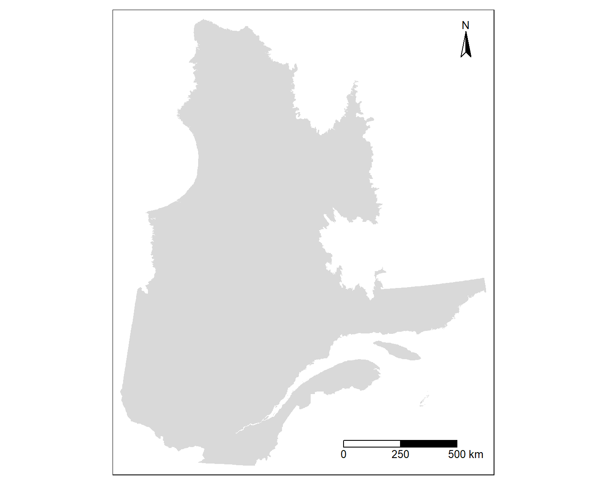
Grille et graticules
Fonctions tm_grid() et tm_borders()
La fonction tm_grid() ajoute une grille à la carte selon le système de coordonnées projetées des données. Dans le cas présent, le shapefile Q est exprimé dans le système de coordonnées projetée Conique conforme de Lambert (epsg:32198) qui est métrique.
La fonction tm_graticules ajoute les lignes de longitude et de latitude du système de coordonnées géographiques, c’est-à-dire non-projetées. Dans le cas présent, le shapefile Q est exprimé dans le système de coordonnées géographiques du Datum North Américain de 1983 (NAD83, espg:4269).
Q1 <- map_Q + tm_grid()
Q2 <- map_Q + tm_graticules()
tmap_arrange(Q1,Q2)
Plusieurs options d’arguments existent pour les fonctions tm_grid() et tm_graticules(). Par exemple, il est possible de préciser le nombre de divisions sur l’axe des x (n.x) et sur l’axe des y (n.y)42, l’épaisseur du trait (lwd), la couleur (col) ou encore la taille de l’écriture (labels.size).
Q1 <- map_Q + tm_grid(labels.size=0.5,
col="yellow",
lwd=3,
n.x = 10, n.y = 4)
Q2 <- map_Q + tm_graticules(labels.col = "darkblue",
alpha = 0.3,
labels.cardinal = FALSE)
tmap_arrange(Q1,Q2)
Attribuer les crédits ou la source des données
Fonction tm_credits()
Il faut utiliser la fonction tm_credits() pour ajouter à la carte une mention sur la source des données, ou toute autre information comme l’auteur ou l’autrice de la carte et son organisation d’attache. Par défaut, la mention apparaît dans le coin inférieur droit.
map_Q +
tm_credits("Données récupérées \nsur le site donneesquebec.ca",
size = 0.6)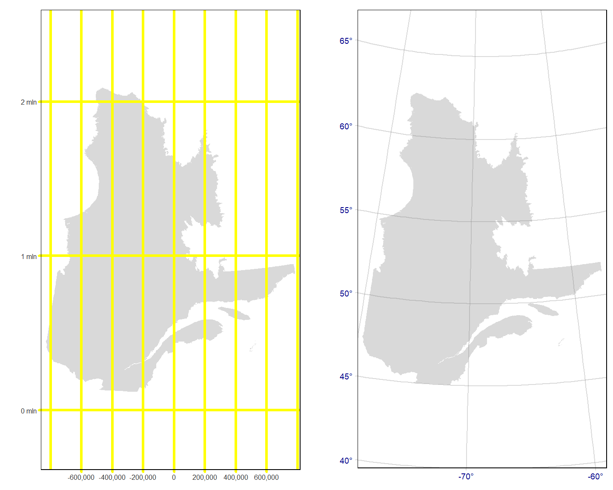
6.1.6 Mise en page
Fonction tm_layout()
La fonction tm_layout permet d’ajuster la mise en page d’une carte et différents éléments de son esthétique. Pour découvrir l’ensemble des arguments possibles tapez la commande help(tm_layout) (ou ?tm_layout) dans votre console R. Plusieurs des arguments utiles sont présentés ci-dessous.
Titre, cadre et couleur du fond
- L’ajout d’un titre (
title), la taille de ce dernier (title.size) et sa position (title.position). - La présence ou l’absence d’un cadre (
frame) et l’épaisseur du trait de celui-ci (frame.lw). - La taille des marges extérieures au cadre:
outer.margins = c(Haut,Droit,Bas,Gauche)oùHaut,Droit,Bas,Gauchesont des chiffres entre 0 (pas de marge) et 1 (marge complète). - La couleur du fond de la carte (
bg.color) et de l’espace à l’extérieure du cadre (outer.bg.color).
Voici quelques exemples de mise en page qui utilisent ces arguments.
# Création d'une carte générale
map_Q <- tm_shape(Q) + tm_fill() + tm_borders()
# Différentes options de mise en page
map_Q + tm_layout(title = "Carte du Québec", title.size =0.8, title.position = c("right","top"))
map_Q + tm_layout(frame = FALSE)
map_Q + tm_layout(bg.color = "aquamarine", scale = 2)
map_Q + tm_layout(frame.lwd = 2, outer.margins = c(0, 0.2,0, 0.2), outer.bg.color="lavender")
Légende
La fonction tm_layout() permet aussi de configurer l’apparence de la légende. Certains des arguments utiles sont:
- La présence, ou non, d’une légende (
legend.show). Par défaut la légende est affichée. - L’option de placer la légende à l’extérieur du cadre de la figure (
legend.outside). - La position de la légende à l’intérieur (
legend.position) ou à l’extérieur (legend.outside.position) du cadre. Par défaut,la légende est placée dans le coin où il y a le plus d’espace. - L’option de mettre un cadre autour de la légende (
legend.frame) et de définir l’épaisseur du trait (legend.frame.lwd) et la couleur de fond de la légende (legend.bg.color) - La police de caractère (
legend.title.fontfamily), la taille des caractères (legend.title.fontface), et la couleur (legend.title.color) du texte et du titre de la légende.
Voici quelques exemples de mise en page de la légende:
tm_shape(Q) +
tm_polygons(col = "NOM_REG") +
tm_layout(legend.show = FALSE)
tm_shape(Q) +
tm_polygons(col = "NUM_REG", title = "Régions administratives",
legend.is.portrait = FALSE) +
tm_layout(frame = FALSE, legend.outside = TRUE,
legend.outside.position = "bottom",
legend.outside.size = 0.15,
legend.text.size = 0.75)
tm_shape(Q) +
tm_fill(col = "NOM_REG", title = "Régions administratives") +
tm_layout(legend.outside = TRUE)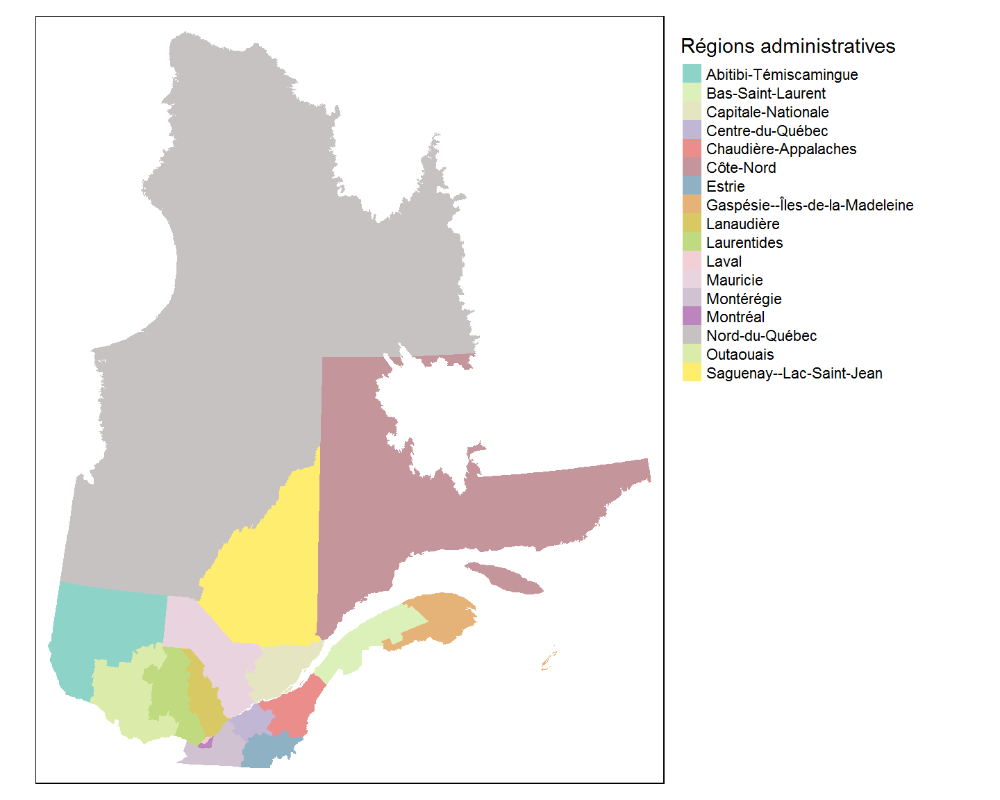
tm_shape(Q) +
tm_fill(col="NOM_REG", title = "Régions administratives") +
tm_layout(bg.color = "black", frame = FALSE, legend.outside = TRUE,
legend.outside.position = "left",
legend.title.fontfamily = "serif",
legend.title.fontface = 2,
legend.title.color = "lightpink",
legend.text.color = "white")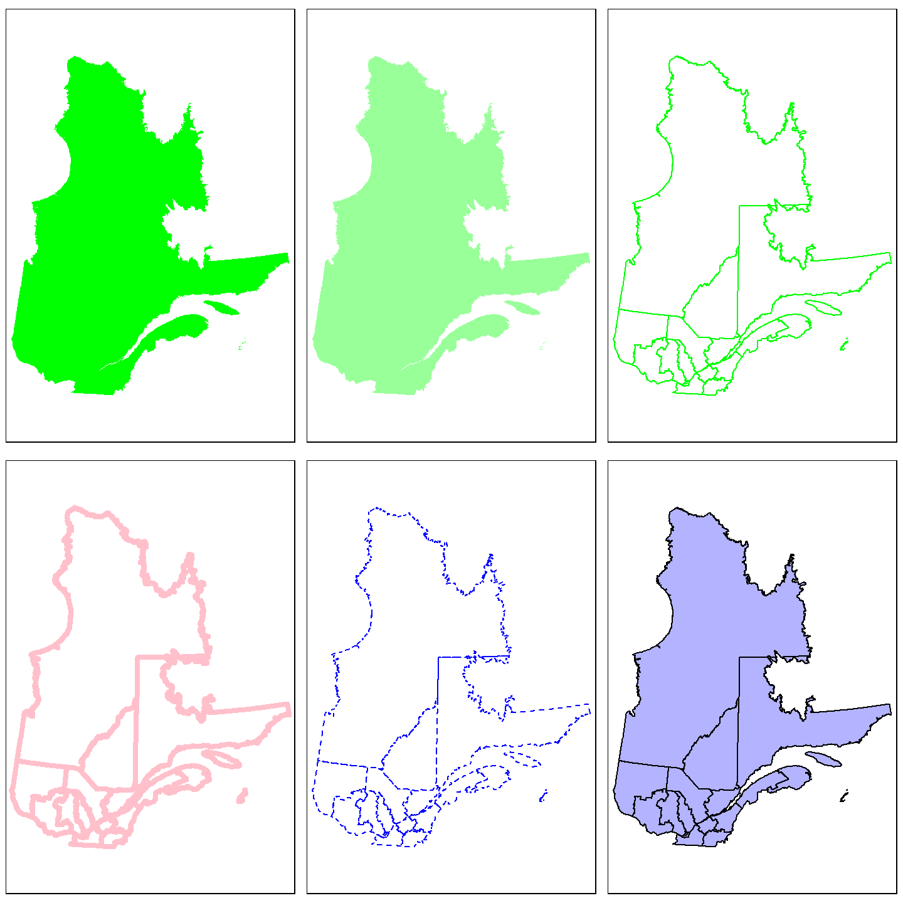
Ajustement des couleurs
De plus, la fonction tm_layout permet d’ajuster les couleurs présentes dans la carte:
- L’argument
aes.colordéfini la couleur de remplissage des polygones, des frontières, du texte, etc. - L’argument
saturationdéfini le niveau de saturation des couleurs. La valeur par défaut est 1, et la valeur 0 donne une représentation en noir et blanc. Il est possible de donner des valeurs supérieures à 1 pour des couleurs très saturées. Il est aussi possible de données des valeurs négatives. - L’argument
sepia.intensityest un nombre entre 0 et 1 qui défini le niveau de “chaleur” des couleurs. Plus sa valeur est grande, plus les couleurs ont une teinte jaune voir brune. La valeur par défaut est 0. - L’argument
aes.palettepermet de changer la palette de couleurs utilisées. La librarietmaputilise les palettes de couleurs de Color Brewer. Dans le cas d’attributs catégoriques (comme le nom de régions) la palette utilisée par défaut se nommeSet3, mais il est possible de choisir d’autres palettes parmi celles-ci:Accent,Dark2,Paired,Pastel1,Pastel2,Set1, etSet2. Nous reviendrons sur le sujet des palettes un peu plus loin dans cete leçon.
Voici quelques exemples de modification des couleurs:
Q1 <- tm_shape(Q) + tm_polygons() +
tm_layout(aes.color = c(fill="lightblue",borders="darkgreen"))
Q2 <- tm_shape(Q) + tm_polygons(col="NUM_REG") +
tm_layout(legend.show = FALSE,
aes.color = c(borders="white"),
saturation = 0)
Q3 <- tm_shape(Q) + tm_polygons(col="NUM_REG") +
tm_layout(legend.show = FALSE,
sepia.intensity = 0.5)
Q4 <- tm_shape(Q) + tm_polygons(col="NUM_REG") +
tm_layout(legend.show = FALSE,
aes.palette = list(cat = "Accent"))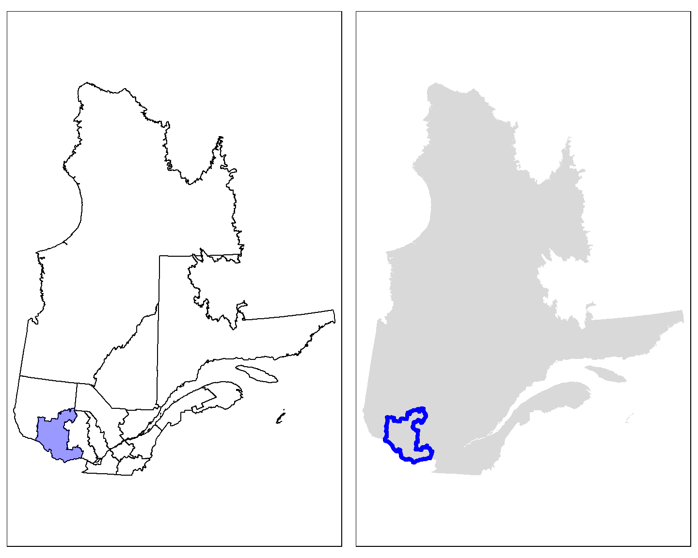
Styles prédéfinis
Fonction tm_style()
La librarie tmap contient des styles prédéfinis qu’on appelle avec la fonction tm_style et qui permettent de ne pas avoir à définir individuellement des arguments de la fonction tm_layout.
Voici quelques uns de ces styles prédéfinis.
tm_shape(Q) + tm_polygons(col="NUM_REG") +
tm_style("classic") +
tm_layout(legend.show = FALSE)
tm_shape(Q) + tm_polygons(col="NUM_REG") +
tm_style("bw") +
tm_layout(legend.show = FALSE)
tm_shape(Q) + tm_polygons(col="NUM_REG") +
tm_style("cobalt") +
tm_layout(legend.show = FALSE)
tm_shape(Q) + tm_polygons(col="NUM_REG") +
tm_style("col_blind") +
tm_layout(legend.show = FALSE) Vous remarquerez que le style col_blind utilise une palette de couleur permettant aux personnes daltoniennes de pouvoir différencier les polygones de couleurs différentes.
6.1.7 Écriture sur une carte
Fonction tm_text()
La fonction tm_text() permet d’écrire sur chaque polygone la valeur d’un de ses attributs.
Par exemple, nous pouvons ajouter le numéro de la région administrative sur chaque polygone:
tm_shape(Q) + tm_polygons(col="NUM_REG") +
tm_style("col_blind") +
tm_layout(legend.show = FALSE, frame = FALSE)+
tm_text("NUM_REG", size = 0.6, fontface="bold")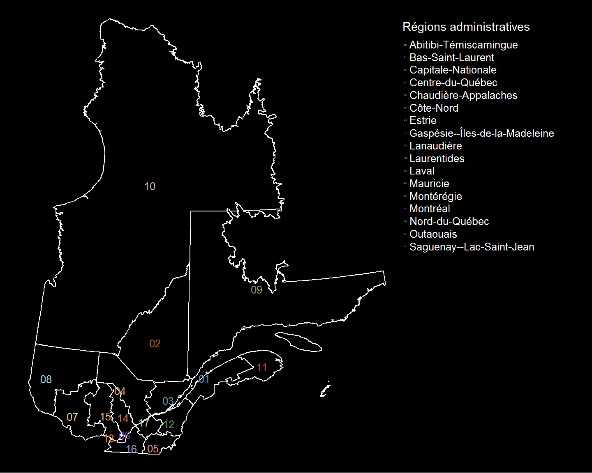
Ou encore:
tm_shape(Q) + tm_polygons() +
tm_layout(aes.color = c(fill="black",borders="white"),
bg.color = "black",
frame = FALSE,
legend.bg.color = TRUE,
legend.outside = TRUE,
legend.text.size = 0.8,
legend.text.color = "white",
legend.title.color = "white") +
tm_text("NUM_REG", col= "NOM_REG",
palette = "Paired",
size = 0.8, fontface="bold",
legend.col.show = TRUE,
title.col = "Régions administratives",
auto.placement=TRUE,
just="right")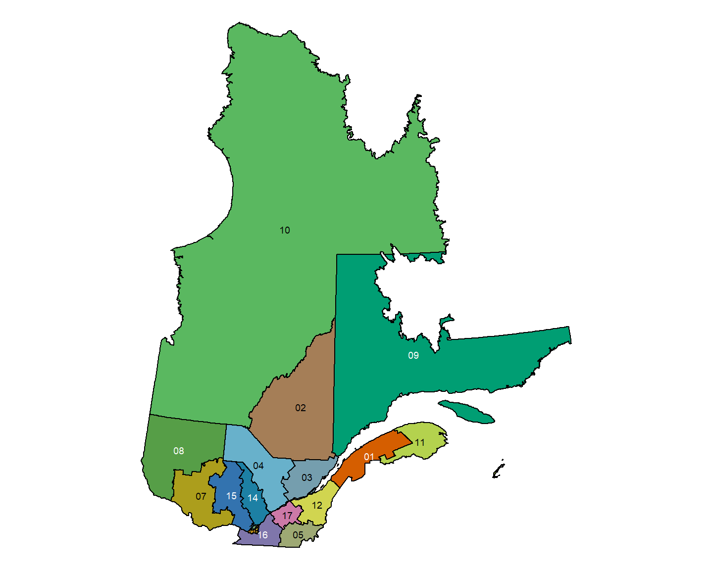
6.1.8 Les lignes
Données sur le réseau routier du Québec
Pour explorer les options d’affichage de données vectorielles de types ligne et multiligne, nous utilisons le shapefile du réseau des routes du Québec. Chargeons ces données dans notre session de travail R avec la fonction st_read():
Ro <- st_read("Module6/Module6_donnees/Routes/QC_routes.shp")Reading layer `QC_routes' from data source
`E:\ELF\Dropbox\Teluq\Enseignement\Cours\SCI1031\Developpement\Structure_test\sci1031\Module6\Module6_donnees\Routes\QC_routes.shp'
using driver `ESRI Shapefile'
Simple feature collection with 223 features and 2 fields
Geometry type: MULTILINESTRING
Dimension: XY
Bounding box: xmin: -822900 ymin: 118000 xmax: 526000 ymax: 983200
Projected CRS: NAD83 / Quebec LambertObserver la structure et les attributs du shapefile Ro. Celui-ci contient 223 multilignes et 2 attributs autres que la géométrie:
NoRte: le numéro de la route,ClsRte: la classe de la route.
En particulier, il existe trois classes possibles de route:
Ro$ClsRte <- as.factor(Ro$ClsRte)
levels(Ro$ClsRte)[1] "Autoroute" "Nationale" "Régionale"Fonction tm_lines()
La bibliothèque tmap possède une fonction particulière pour illustrer des objects vectoriels de type ligne et multigne. Il s’agit de la fonction tm_lines(). Celle-ci doit être ajouter à la fonction tm_shape(L) où L est un shapefile contenant des objets de géométrie ligne ou multiligne.
Illustrons les multilignes du shapefile Ro:
tm_shape(Ro) + tm_lines()
Pour superposer la carte des routes sur la carte du Québec, nous utilisons la propriété additive des objets tmap.
tm_shape(Q) + tm_fill() +
tm_shape(Ro) + tm_lines(col="brown") +
tm_layout(title = "Réseau routier")
Notez que chaque fois qu’on ajoute un nouvel ensemble de données à cartographier en utilisant tm_shape(nouvelles_donnees), les fonctions tm_fonctions() qui suivent s’appliquent à ces nouvelles données et non aux données antérieures.
Pour représenter différemment les objets de type ligne en fonction de la valeur d’un de leur attribut, nous pouvons utiliser l’argument col dans la fonction tm_lines:
# créons une palette de trois couleurs
pal.col<-c("red","darkgoldenrod4","darkslateblue")
tm_shape(Q) +
tm_fill() +
tm_shape(Ro) +
tm_lines(col = "ClsRte",
palette = pal.col,
title.col = "Types de route")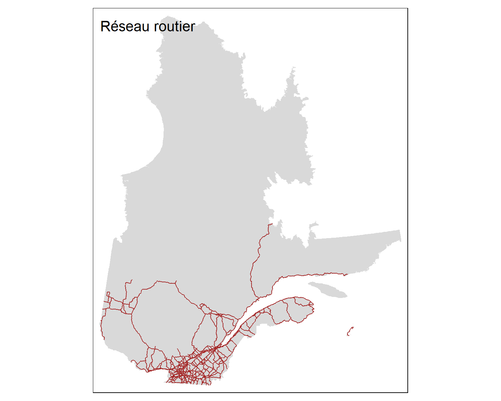
6.1.9 Les points
Coordonnées des municipalités du Québec
Pour explorer les options d’affichage de données vectorielles de types point et multipoint, nous utilisons le shapefile des coordonnées géographiques de quelques municipalités du Québec. Chargeons ces données dans notre session de travail R avec la fonction st_read():
V <- st_read("Module6/Module6_donnees/Villes/QC_coord_municipalites.shp")Reading layer `QC_coord_municipalites' from data source `E:\ELF\Dropbox\Teluq\Enseignement\Cours\SCI1031\Developpement\Structure_test\sci1031\Module6\Module6_donnees\Villes\QC_coord_municipalites.shp'
using driver `ESRI Shapefile'
Simple feature collection with 15 features and 1 field
Geometry type: POINT
Dimension: XY
Bounding box: xmin: -78.91 ymin: 45.41 xmax: -64.47 ymax: 62.41
Geodetic CRS: NAD83Ce shapefile compte 15 objets de type point et un seul attribut (Mncplts) correspondant au nom de la municipalité qui lui est associée.
La bibliothèque tmap comprend plusieurs fonctions permettant de représenter des données de type point. Familiarisons-nous d’abord avec les fonctions tm_dots() et tm_markers(). Nous verrons plus loin les fonctions tm_bubbles() et tm_symbols().
Fonction tm_dots()
La fonction tm_dots() fonctionne de façon similaire aux fonctions tm_polygons() et tm_lines(). Il suffit de l’ajouté à la fonction tm_shape(P) où P est un shapefile de types point ou multipoint.
# Juste les points
Q1 <- tm_shape(V) + tm_dots()
# Les points et la carte du QC
Q2 <- tm_shape(Q) + tm_fill(col = "blue", alpha = 0.4) +
tm_shape(V) + tm_dots(col = "darkblue", size = 1)
#
tmap_arrange(Q1,Q2)
Nous pouvons également définir la couleur des points en fonction de la valeur de leur attribut.
tm_shape(Q) + tm_fill() +
tm_shape(V) + tm_dots(col = "Mncplts",
palette = "Paired",
size = 1) +
tm_layout(frame = FALSE,
legend.outside = TRUE,
title = "Municipalités",
legend.title.color = NA,
legend.text.size = 0.8)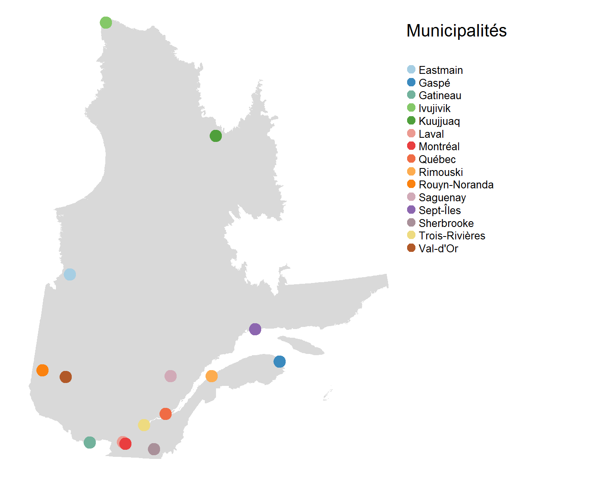
Fonction tm_markers()
La fonction tm_markers() représente les points par le symbole de repère géographique:
tm_shape(Q) + tm_fill() +
tm_shape(V) + tm_markers(size = 0.5,
text = "Mncplts",
text.size = 0.8,
text.just = "top") +
tm_layout(inner.margins = c(0.1,0.2,0.1,0.2))
La fonction tm_markers() permet d’ajouter du texte facilement sur les repères et contient des arguments similaires à la fonction tm_text().
6.1.10 Données matricielles
Données d’élévation du Québec
Pour explorer les options d’affichage de données matricielles, nous utilisons un raster représentant le relief du territoire québecois sous forme d’une matrice d’élévation. Chargeons ces données dans notre session de travail R avec la fonction raster(). Nous devons prélablement charger la bibliothèque raster:
library(raster)
E <- raster("Module6/Module6_donnees/Elevation/QC_Elevation.tif")Le raster E est une matrice de 810612 cellules, et chacune de ces cellules a une résolution d’environ 2 km par 2 km. La valeur maximale d’élévation est de 1592 m.
Fonction tm_raster()
La fonction tm_raster() de la bibliothèque tmap permet de visualiser les rasters en assignant des couleurs différentes pour des classes de valeurs différentes. L’argument n sert à préciser le nombre approximatif de classes à utiliser.
tm_shape(E) + tm_raster(title = "Élévation (m)")
tm_shape(E) + tm_raster(n = 10, title = "Élévation (m)")
Il est possible d’afficher en légende un histogramme illustrant la distribution des valeurs. Par exemple:
tm_shape(E) + tm_raster(n = 10,
title = "Élévation (m)",
legend.hist = TRUE) +
tm_legend(outside = TRUE,
hist.width = 4)
Par défaut, la palette de couleur utilisée est la palette séquentielle YlOrBr de ColorBrewer (de jaune à brun en passant par orange). Or, nous pouvons changer la palette de couleur. Utilisons, par exemple, la fonction colorRampPalette() pour créer notre propre palette de couleur.
pal.elevation = colorRampPalette( c("midnightblue","forestgreen",
"darkolivegreen4","burlywood",
"chocolate4"))
tm_shape(E) + tm_raster(n = 10,
title = "Élévation",
palette = pal.elevation(10),
legend.hist = TRUE,
colorNA = "beige" ) +
tm_legend(outside = TRUE, hist.width = 3)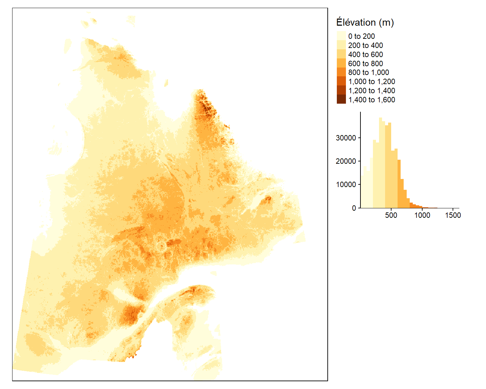
Il existe différentes façons de former des classes de valeur à partir de la distribution. L’argument style de la fonction tm_raster() permet de choisir une méthode parmi plusieurs dont les suivantes:
"fixed": crée des classes de valeurs selon notre propre choix. Ces classes doivent être définies dans un vecteur assigné à l’argumentbreaks."equal": divise les valeurs ennclasses. Ceci est la méthode par défaut."pretty": choisi automatiquement le nombre de classes qui permet de distinguer les valeurs dans un rendu esthétique."quantile": divise les valeurs en quantiles."jenks": utilise l’algorithme de Jenks pour déterminer le nombre optimal de classes.
Visualisons à nouveau la carte des données d’élévation en utilisant un style “fixed” et un style “quantile”:
# définir la mise en page pour les deux cartes
format_carte <- tm_layout(frame = FALSE,
legend.position = c(0.67,0.04),
legend.title.size = 0.8,
legend.format=c(text.align="right"),
legend.bg.color = "white",
legend.frame = "black")
# style fixed.
Efixed <- tm_shape(E) +
tm_raster(title = "Élévation(m)",
palette = pal.elevation(10),
style = "fixed",
breaks = c(0,100,200,300,400,500,600,700,800,900,1000,1600)) +
format_carte
# style quantile
Equant <- tm_shape(E) +
tm_raster(title = "Élévation(m)",
palette=pal.elevation(10),
style="quantile") +
format_carte
tmap_arrange(Efixed,Equant)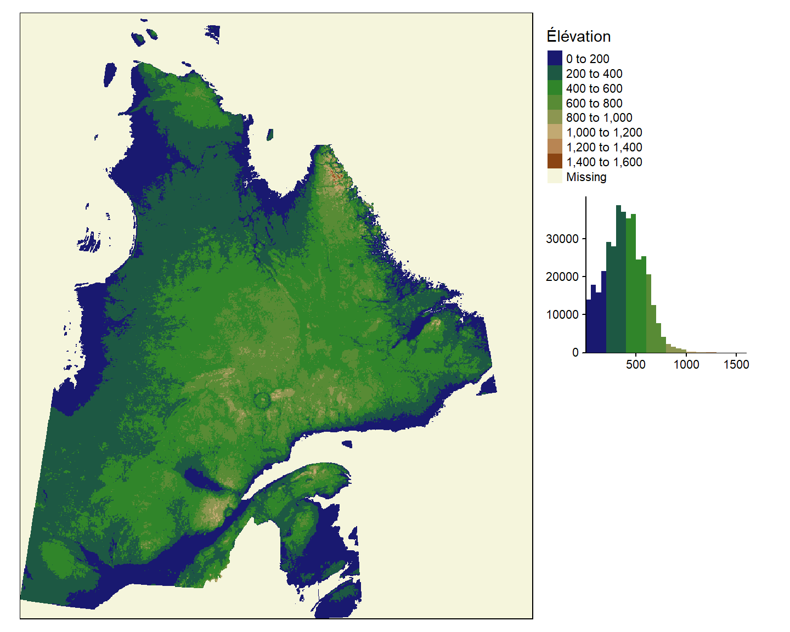
6.1.11 Carte avec symboles proportionnels
Dans des cartes thématiques, il est souvent utile de représentées certains attributs par des symboles proportionnels. Les fonctions tm_symbols() et tm_bubbles() de la bibliothèque tmap sont utiles pour réaliser ce type de cartes.
Fonction tm_symbols()
La fonction tm_symbols() est similaire à la fonction tm_dots() mais ne s’utilise pas nécessairement avec des données vectorielles de type points. En particulier, elle permet de représenter la valeur d’attribut d’un polygone en affichant un symbole dont la taille ou la couleur est proportionnelle à cette valeur.
En guise d’exemple, reprenons les données sur les régions administratives du Québec pour lesquelles nous connaissons la taille de la population. Nous pouvons illustrer les régions par un cercle dont le diamètre est proportionnel à la taille de sa population. Il s’agit d’attribuer à l’argument size, le nom de l’attribut que nous souhaitons représenter.
tm_shape(Q) +
tm_polygons(col="NUM_REG", legend.show = FALSE) +
tm_style("bw") +
tm_symbols(col = "black",
size = "Pop_tot",
legend.size.show = TRUE,
legend.size.is.portrait = TRUE,
title.size = "Population")
Par défaut, le symbole utilisé est un point. Le point correspond au symbole shape = 21. Nous pouvons toutefois utiliser d’autres symboles comme le carré (shape = 15), ou le repère géographique (shape = marker_icon()). Vous pouvez même importer vos propres symboles.
carte_base <- tm_shape(Q) +
tm_polygons(col="NUM_REG", legend.show = FALSE) +
tm_style("bw")
carte_carre <- carte_base +
tm_symbols(shape = 15,
col = "red",
size = "Pop_tot",
legend.size.show = TRUE,
legend.size.is.portrait = TRUE,
title.size = "Population")
carte_marqueur <- carte_base +
tm_symbols(shape = marker_icon(),
border.col = NULL,
size = "Pop_tot",
legend.size.show = TRUE,
legend.size.is.portrait = TRUE,
title.size = "Population")
tmap_arrange(carte_carre, carte_marqueur)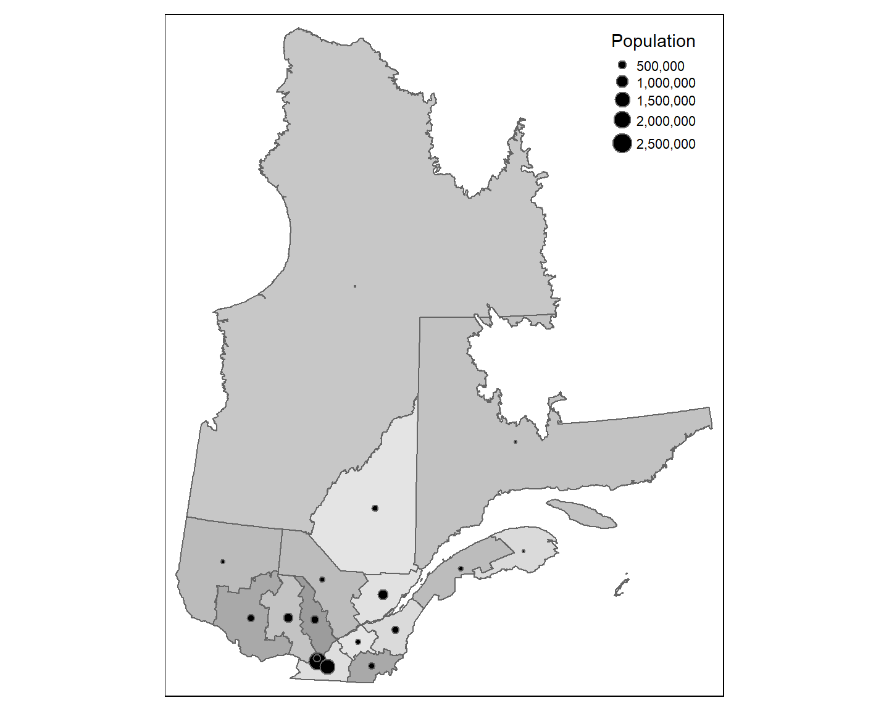
Représenter deux légendes
Lorsque nous utilisons des symboles proportionnels, nous devons souvent avoir plus d’une légende. Par exemple, dans les cartes précédentes, nous avions seulement une légende se rapportant à la taille des populations mais aucune légende pour identifier les régions. Pour ajouter deux légendes (ou plus), nous devons utiliser la fonction tm_layout() avec l’argument legend.stack qui précise si les légendes seront disposées de façon verticale ou horizontale.
tm_shape(Q) +
tm_polygons(col="NOM_REG",
palette="Set1",
border.col = "darkgrey",
title ="Régions administratives") +
tm_symbols(size = "Pop_tot",
border.col = "grey",
col="black",
scale = 2,
legend.size.show = TRUE,
legend.size.is.portrait = FALSE,
sizes.legend.labels = c("500","1000","1500","2000","2500"),
title.size ="Population (en milliers)") +
tm_layout(frame = FALSE,
legend.outside = TRUE,
legend.stack = "vertical",
legend.title.fontface = "bold" ) 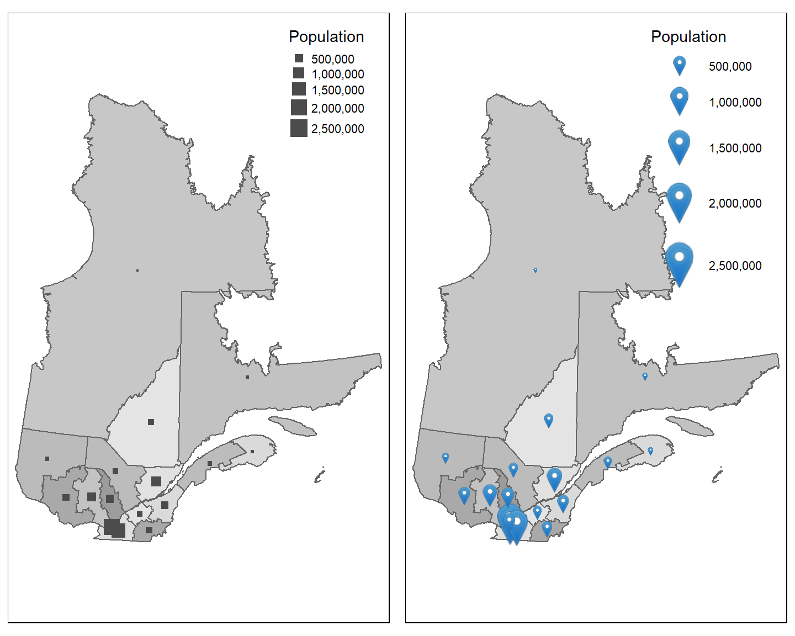
Fonction tm_bubbles()
La fonction tm_bubbles() est similaire à la fonction tm_symbols() et s’utilise lorsqu’on souhaite seulement représenter des symboles sous forme de cercle/point. Cette fonction est pratique lorsque nous voulons représenter deux attributs avec un symbole: le premier attribut est représenté par la taille du cercle et le second attribut par sa couleur.
Utilisons à nouveau les données sur la taille des populations des régions administratives. Par exemple, représentons chaque région par un cercle dont le diamètre est proportionnel à la taille totale de sa population (comme nous l’avons fait plus haut). De plus, colorons chaque cercle en fonction de la proportion d’enfants (individus agés entre 0 et 14 ans) dans sa population.
Tout d’abord, nous devons calculer la proportion d’enfants dans chaque région. Pour le moment, nous connaissons seulement le nombre d’enfants (A0.14_T). Créons un nouvel attribut pour le shapefile Q:
Q$Pop_prop_enfant <- Q$Pop_0_14/Q$Pop_totUtilisons maintenant la fonction tm_bubbles() en définissant l’argument size par l’attribut "ATot_T", et l’argument col par l’attribut "Pop_prop_enfant":
tm_shape(Q) +
tm_polygons(col = "NUM_REG",
legend.show = FALSE,
palette = "Greys") +
tm_bubbles(size = "Pop_tot" ,
col = "Pop_prop_enfant",
style = "quantile",
scale = 2,
border.col = "black",
border.lwd = .5,
legend.size.show = TRUE,
legend.size.is.portrait = FALSE,
title.size ="Population (en milliers)",
title.col = "Proportion d'enfants (0-14 ans)",
sizes.legend.labels = c("500","1000","1500","2000","2500"))+
tm_layout(frame = FALSE,
legend.outside = TRUE,
legend.title.size = 1)
L’argument style est utilisé pour définir les classes de couleurs. Ici, nous avons choisi une classification en quantile. Noter que nous pouvons définir un titre pour la légende des tailles (title.size) et un titre pour la légende des couleurs (title.col).
Remarquer que cette figure nous permet d’observer que la proportion d’enfants au Nunavik est très grande malgré que la taille de la population soit petite.
6.1.12 Cartes Choroplèthes
Les cartes choroplèthes sont utilisées pour représenter des données vectorielles de type polygone en assignant une couleur à chaque polygone en fonction de la valeur d’un de ces attributs.
Pour créer des cartes choroplèthes, nous utilisons l’argument col de la fonction tm_polygons(). L’assignation des couleurs se fait de la même façon que pour tm_raster() et tm_bubbles() en définissant des classes de valeur d’attribut.
Créons des cartes choroplèthes de la proportion d’enfants dans les régions administratives en utilisant différentes classifications de couleurs.
# Par defaut, nous avons 4 classes
Qdefaut <- tm_shape(Q) + tm_polygons(col = "Pop_prop_enfant")
# style fixed.
Qfixed <- tm_shape(Q) + tm_polygons(col = "Pop_prop_enfant",
style = "fixed",
breaks = c(0.1, 0.14, 0.15, 0.16, 0.18, 0.3))
# style quantile
Qquant = tm_shape(Q) + tm_polygons(col = "Pop_prop_enfant",
style = "quantile")
tmap_arrange(Qdefaut,Qfixed,Qquant)Legend labels were too wide. The labels have been resized to 0.6, 0.6, 0.6, 0.6, 0.6. Increase legend.width (argument of tm_layout) to make the legend wider and therefore the labels larger.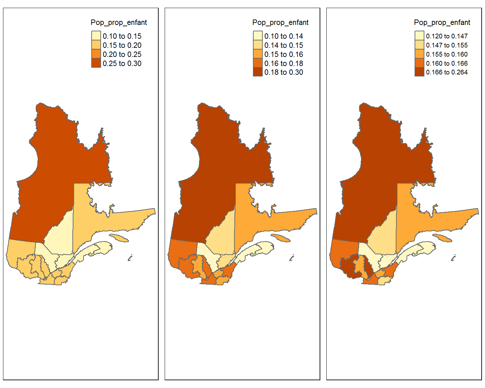
6.1.13 Cartes à panneaux multiples
Fonction tm_facets()
Il est parfois utile illustrer des polygones côte-à-côte afin de faciliter la comparaison d’un de leurs attributs. On appelle les cartes des polygones individuellement représentés des panneaux.
Pour créer une carte à panneaux multiples, nous utilisons d’abord la fonction tm_polygons() pour représenter chaque polygone selon la méthode de notre choix (par exemple selon une représentation choroplèthe d’un des attributs). Ensuite, nous ajoutons la fonction tm_facets() pour préciser la disposition des panneaux (arguments nrow ou ncol) ainsi que l’attribut utilisé (la facette) pour distinguer chaque panneau (argument by).
Représentons à nouveau les polygones des régions administratives selon la proportion d’enfants dans leur population mais cette fois en créant une carte à panneaux multiples:
tm_shape(Q) + tm_polygons(col = "Pop_prop_enfant",
style = "quantile") +
tm_facets(by = "NOM_REG",
nrow = 5,
scale.factor = 5) +
tm_layout(panel.label.height = 2,
panel.label.size = 0.9,
legend.show = FALSE)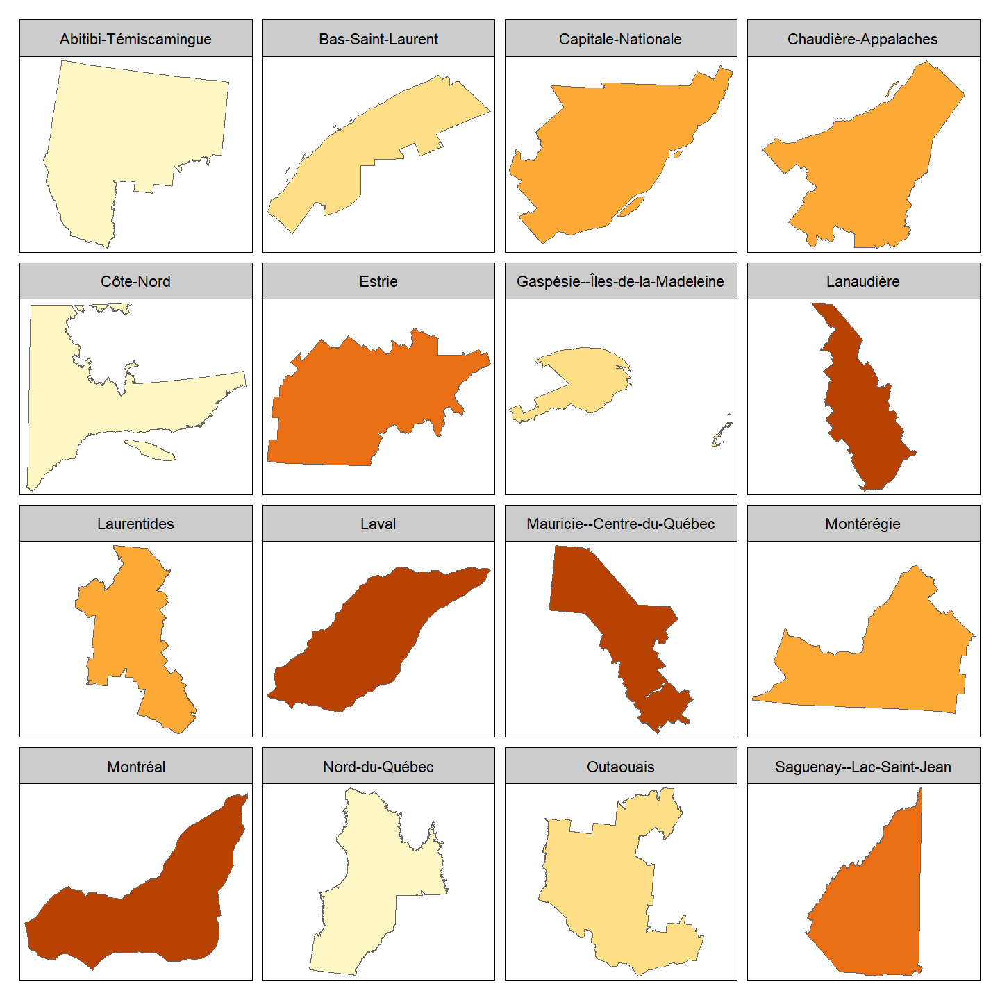
L’argument scale.factor détermine la mise à l’échelle du texte par rapport à la mise à l’échelle des polygones. Les polygones ont été réduits de taille pour entrer dans leur panneau, toutefois nous souhaitons que le titre apparaissant dans la partie supérieure du panneau ne soit pas réduit autant.
Il est possible de modifier la police du texte, sa couleur, la couleur de fond des panneaux, le cadre des panneaux, et plus, en utilisant les arguments de la fonction tm_layout().
6.1.14 Cartes avec encadré
Il est parfois nécessaire d’accompagner une carte par une autre carte de taille moindre circonscrite dans un encadré sur ou en marge de la carte principale. Ceci est le cas, par exemple, lorsque nous souhaitons préciser la localisation de la carte principale dans une région plus grande.
Bibliothèque grid
Pour réaliser une carte avec un encadré, nous devons utiliser la bibliothèque grid. Commençons par installer cette bibliothèque:
install.packages("grid")En guise d’exemple, considérons une section du raster d’élévation E correspondant à la région de l’Outaouais. Vous n’avez pas besoin de comprendre les opérations ci-dessous car nous les apprendrons dans les modules 7 et 8.
# Isoler le polygone de l'Outaouais
Q_Outaouais <- subset(Q, NOM_REG == "Outaouais")
# Découper le raster E selon l'étendue de Q_Outaouais
E_Outaouais <- crop(E, extent(Q_Outaouais))
# Créer un mask
E_Outaouais <- mask(E_Outaouais, Q_Outaouais)Créons d’abord une carte des données d’élévation pour la région de l’Outaouais. Cette carte consituera notre carte principale.
# Définir la carte principale
carte_princ <- tm_shape(E_Outaouais) +
tm_raster(title = "Élévation (m)",
palette = pal.elevation(5)) +
tm_scale_bar(position = c("left","bottom"),
text.size = 0.6)
# Mise en page de la carte
format_carte <- tm_layout(frame = FALSE,
legend.outside = TRUE,
legend.outside.position = "right",
legend.title.size = 0.8,
legend.bg.color = "white",
legend.frame = "black")Créons maintenant une carte du Québec qui délimite la région de l’Outaouais par des frontières de couleur rouge. Cette carte sera l’encadré à insérer sur la carte principale.
# Définir la carte encadré
carte_cadre <- tm_shape(Q) +
tm_borders(col = "black") +
tm_shape(Q_Outaouais) +
tm_borders(lw=2, col="red")Nous pouvons enfin combiner les deux cartes ensembles. Il s’agit d’afficher la carte principale et d’ajouter la carte encadré en utilisant la fonction print().
En particulier, nous utilisons la fonction viewport() de la bibliothèque grid qui permet de définir la position de la carte encadré sur la carte ainsi que sa taille.
library(grid)
carte_princ + format_carte
print(carte_cadre, vp = viewport(0.72, 0.42, width = 0.4, height = 0.4))
Les chiffres (0.72,0.42) correspondent aux coordonnées (x,y) de la position de la carte encadrée sur la carte principale (où (0,0) est le coin inférieur gauche de la carte principale, et (1,1) est le coin supérieur droit).
Les arguments width et height sont des nombres entre 0 et 1. Ceux-ci correspondent au facteur par lequel nous souhaitons réduire la largeur et la hauteur de la carte encadrée.
Les fondements de la sémiologie graphique ont été développés par le cartographe Jacques Bertin qui publia notamment l’ouvrage «Sémiologie Graphique » en 1967.↩︎
Définition reprise du guide ArcGIS Pro: https://pro.arcgis.com/fr/pro-app/latest/help/mapping/layer-properties/symbolization.htm.↩︎
Consultez la page Wikipédia pour en apprendre davantage sur les systèmes TSL et TSV.↩︎
Consulter ce site pour en apprendre davantage sur la cartographie avec
ggplot2↩︎Noter que le nombre de divisions créé par
tmapest approximativement celui demandé cartmapcrée des divisions uniformément espacées situées sur des coordonnées de valeurs entières.↩︎